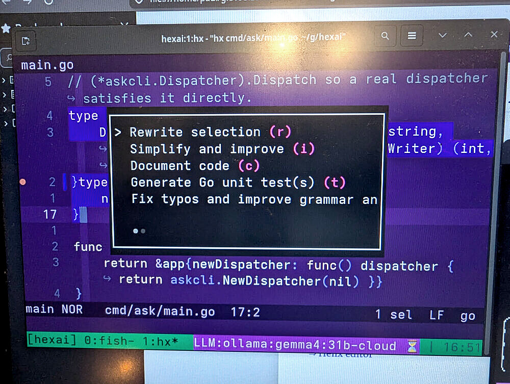
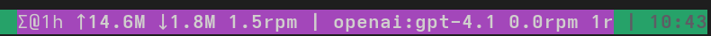

Unveiling Hexai: AI companion for Helix and the terminal in general
Published at 2026-07-08T17:10:52+03:00
I have been using Helix as my main editor for a while now. It is fast, modal, and stays out of the way. The one thing I missed was a bit of LLM help without leaving the editor or opening a browser tab. So I built Hexai.
Hexai is an AI add-on for Helix. It speaks LSP, so it also works with other editors in theory, but I only test it with Helix. It gives me inline completions, in-editor chat, code actions, a terminal CLI, a tmux popup action runner, and a small task manager for agent work. It is written in Go, lives on Codeberg, and is configured through plain TOML files.
Hexai has been an undercover pet project of mine since around mid-last year. As I write this it is at version 0.42.1, so it has been quietly growing for a good while before this first proper write-up.
Hexai source code
Helix editor
Table of Contents
What it is
Hexai is really a bundle of small tools that share the same configuration:
- hexai-lsp-server — the LSP server that Helix talks to.
- hexai — a standalone CLI for quick LLM questions from the terminal or scripts.
- hexai-tmux-action — a Bubble Tea TUI that pops up inside tmux and runs code actions on the current selection.
- ask — a tiny task management CLI for agent-managed project work.
Everything uses the same config.toml, the same provider pool, and the same prompt overrides. I can switch models in one place and the LSP, CLI, and popup all follow along.
These are opinionated tools. They reflect how I work — Helix inside tmux, a terminal CLI, a thin Taskwarrior wrapper — not a generic plugin system. If your workflow matches mine, they get out of the way; if it doesn't, you will probably want to tweak the config or fork it.
Installing it
The easiest way is to install the binaries with go install. Each binary is a separate cmd/ package:
go install codeberg.org/snonux/hexai/cmd/hexai@latest
go install codeberg.org/snonux/hexai/cmd/hexai-lsp-server@latest
go install codeberg.org/snonux/hexai/cmd/hexai-tmux-action@latest
go install codeberg.org/snonux/hexai/cmd/ask@latest
If you prefer to build from a checkout, Hexai uses Mage:
go install github.com/magefile/mage@latest
mage build
mage install
That drops hexai, hexai-lsp-server, hexai-tmux-action, and ask into your GOPATH/bin.
Configuring providers
Hexai looks for a global config at ~/.config/hexai/config.toml and a per-project override at .hexaiconfig.toml in the git root. Environment variables prefixed with HEXAI_ win over both files.
The default provider is Ollama Cloud with kimi-k2.6 (it might be different by the time you read this!). To use a local Ollama server instead, override the base URL:
[provider]
name = "ollama"
[ollama]
model = "qwen3-coder:30b-a3b-q4_K_M"
base_url = "http://localhost:11434"
Because that points at localhost, nothing leaves your machine — prompt, code, and reply all stay local. That is the main reason I keep a local Ollama around.
For OpenAI, the config is similar:
[provider]
name = "openai"
[openai]
model = "gpt-4o-mini"
Hexai reads the API key from HEXAI_OPENAI_API_KEY first, then falls back to OPENAI_API_KEY. The same pattern works for OpenRouter, Anthropic, and You.com.
Wiring it into Helix
Tell Helix about the Hexai LSP server in ~/.config/helix/languages.toml. Here is my Go setup:
[[language]]
name = "go"
auto-format = true
formatter = { command = "goimports" }
language-servers = [ "gopls", "hexai" ]
[language-server.hexai]
command = "hexai-lsp-server"
You can add hexai after gopls or any other LSP. It does not replace them; it just adds completions, code actions, and chat on top.
Once the LSP is wired in, Hexai also offers inline auto-completions as you type. By default it fires after a short idle debounce (completion_debounce_ms, 800 ms) when you hit one of the trigger characters (. : / _ space), and it waits for every configured backend before showing results (completion_wait_all). All of it is tunable in config.toml, and you can turn completions off for a session without restarting — see the slash commands below.
For the popup action runner, bind a key in ~/.config/helix/config.toml:
[keys.select]
"A-a" = ":pipe hexai-tmux-action"
[keys.normal]
"A-a" = ["select_line", ":pipe hexai-tmux-action"]
I use Alt-a. Select some code, hit Alt-a, and the popup appears.
Inline chat and prompts
The LSP adds two lightweight ways to talk to the model without leaving the editor:
- End a line with ?>, !>, :>, or ;> to ask a question. Hexai removes only the trailing >, keeps the question, and inserts a > quoted reply below the line.
- Type >!do something> inline to ask for a quick edit, or >>!do something> to replace the whole line with the completion.
Chat example — a question ending in ?>:
What is a Go slice?>
After the LSP responds you get something like:
What is a Go slice?
> A slice is a dynamically-sized view into an array. It stores a pointer to
> the backing array plus length and capacity.
Inline example — >>! replaces the whole line with the completion:
>>!document this function>
// Foo returns the square of n.
func Foo(n int) int { return n * n }
Context is included automatically. For follow-ups, Hexai keeps the last few Q/A pairs above the cursor in mind, so you can ask related questions without repeating yourself.
There are a few slash commands you can type at the end of a chat line: /reload> re-reads config.toml without restarting the LSP, /disable> pauses auto-completions for the session, and /enable> turns them back on.
In the editor buffer it ends up looking like this — the question stays, the reply is quoted below, and a follow-up picks up the same context:
What is a Go slice?
> A slice is a dynamically-sized view into an array. It stores a pointer to
> the backing array plus length and capacity.
And how do I append to one?
> Use the built-in append: s = append(s, x). It grows the backing array
> when capacity is exhausted, returning a new slice.
hexai-tmux-action is my favorite part. Inside a tmux session, select code in Helix and press the bound key. A tmux popup opens with this menu:
r Rewrite selection
i Simplify and improve
c Document code
t Generate Go unit test(s)
f Fix typos and improve grammar and clarity
p Custom prompt (opens your editor)
s Skip
Pick one, the popup closes, and the rewritten code is piped back into Helix. For rewrite actions, I usually add a small instruction in a strict marker like ;extract this into a helper; inside the selection. The runner finds the first instruction and uses it.
A mandatory detail: the popup is a real tmux popup, so Helix must be running inside a tmux session for this to work — there is no fallback to a separate window. Start it with:
tmux new -s hx
hx some-file.go
Then select code and hit Alt-a. No special tmux.conf is required for the popup itself; the only hard requirement is that Helix lives inside tmux (and tmux 3.2 or newer, since the popup uses tmux's popup feature).
The menu is fully configurable. This is how I replace it with a smaller custom menu:
[[tmux_action.menu]]
kind = "rewrite"
hotkey = "r"
[[tmux_action.menu]]
kind = "document"
hotkey = "c"
[[tmux_action.menu]]
kind = "custom"
custom_id = "extract-function"
hotkey = "e"
[[tmux_action.menu]]
kind = "skip"
hotkey = "s"
Custom actions reference entries under [[prompts.code_action.custom]] in the same config file.

Optional but useful: have tmux show live Hexai stats (provider, model, rpm, bytes) in the status line. Add this to ~/.config/tmux/tmux.conf (or ~/.tmux.conf):
set -g status-right '#{@hexai_status} #[fg=colour8]| %H:%M'
set -g status-right-length 120
The @hexai_status option is updated by the CLI, the LSP, and the action runner. Disable it with HEXAI_TMUX_STATUS=0 if you don't want it.

The CLI
The hexai CLI is useful for quick questions from the terminal or from scripts:
# Ask from stdin
cat some-file.go | hexai
# Ask from an argument
hexai 'explain this function'
# Both stdin and argument are concatenated
cat some-file.go | hexai 'write unit tests for this'
# Open the global config in $HEXAI_EDITOR or $EDITOR
hexai config
# Simulate how fast a model feels without calling a provider
hexai --tps-simulation 12-18
A real one-shot looks like this (only stdout is shown):
$ hexai 'install ripgrep on fedora'
sudo dnf install ripgrep
The provider label and the run summary (timing, token counts, rpm) go to stderr, so stdout stays clean for pipes — hexai 'install ripgrep on fedora' | sh just works.
Managing agent tasks with ask
ask is a thin wrapper around Taskwarrior that auto-scopes tasks to the current git project and tags them with +agent. I use it to keep track of what the coding agent is supposed to do next.
Under the hood every ask command is just a Taskwarrior command filtered to project:REPO +agent, where REPO is the name of the git repository root ask was run in. The tasks are plain Taskwarrior tasks, so you can drop down to task itself any time and work with the same data. From the hexai repo, for example:
# Same tasks, raw Taskwarrior
task project:hexai list
task project:hexai +agent next
ask just hides the project filter, the +agent tag, and the raw UUIDs so the day-to-day output stays small and project-local.
That scoping is also a security boundary, and the main reason I let an LLM agent touch my Taskwarrior database at all. Because ask always applies the project:REPO +agent filter, the agent can only see and modify tasks in its own current project — it cannot delete, reprioritize, or even see anything outside that filter. So ask is really a safety wrapper around task: you can hand it to a coding agent without giving it free rein over the rest of your tasks.
# Add a task for the current project
ask add priority:H "implement config reload"
# List pending agent tasks
ask list
# Start and finish work (ask add prints the alias, e.g. os0)
ask start os0
ask done os0
# See details without exposing raw UUIDs
ask info os0
The IDs shown are stable local aliases, not Taskwarrior's numeric IDs. Taskwarrior gives you two built-in identifiers: a numeric ID that isn't stable across syncs and exports, and a UUID that is stable but far too long to type by hand. ask instead keeps its own mapping from each task's UUID to a short, permanent alias (cached under Hexai's cache dir) — so you get the best of both: a stable, short ID that never changes even if tasks above it get completed or deleted. ask info hides the raw UUID unless HEXAI_DEBUG is set, so the short alias is the one you actually use day to day.
ask works from anywhere inside the project git tree and derives the project name from the repo root. To manage tasks for another project, use ask proj:hexai list.
One detail worth knowing: the alias strings are reversed on purpose. The underlying counter is monotonic (1, 2, 3, …), and a naive encoding would make consecutive tasks share a leading character once the list grows past 36 (00, 01, 02, … all start with 0), which kills shell tab-completion. Reversing the string makes the first character vary as fast as possible (00, 10, 20, … instead of 00, 01, 02, …), so typing the first letter in Fish actually narrows the list. That is the whole reason the IDs look slightly odd.
To actually get those completions in Fish, run ask fish | source (or drop it into Fish's conf.d) — it gives you tab-completion for both subcommands and the reversed alias IDs.
ask list prints a compact table:
Urg | Pri | ID | Status | Started | Tags | Description
----------------------------------------------------------------------------
7.8 | H | os0 | pending | no | agent | implement config reload
5.7 | M | ps0 | pending | no | agent | add fish completion docs
3.6 | L | qs0 | pending | no | agent | deprecate hexai-mcp-server README note
And ask info os0 shows one task without exposing the raw UUID:
ID: os0
Description: implement config reload
Status: pending
Started: no
Priority: H
Urgency: 7.8
Tags: agent
This is where it becomes useful for agentic coding. There is an agent skill and a slash command built on top of ask: the agent-task-management skill knows how to read and update the ask task list, and the /work-on-tasks command uses that skill to work through a whole backlog on its own — pick the next actionable task, hand it to a fresh sub-agent, mark it done, and continue until nothing actionable is left. That is pretty useful after a planning session where you created a bunch of tasks with their proper dependencies set: point the agent at the project, run /work-on-tasks, and it chews through the queue one task at a time.
agent-task-management skill
/work-on-tasks command
Running multiple providers side by side
One feature I use more than I expected: per-surface model lists. In config.toml you can configure several providers or models for the same entry point, and Hexai fans the request out to all of them in parallel.
[[models.cli]]
provider = "openai"
model = "gpt-4o-mini"
temperature = 0.4
[[models.cli]]
provider = "ollama"
model = "qwen3-coder:30b-a3b-q4_K_M"
temperature = 0.2
With that, hexai 'summarize this file' prints two labeled answers side by side:
ollama:qwen3-coder:30b-a3b-q4_K_M:
A short Go program that reads a file line by line and prints each line.
openai:gpt-4o-mini:
Reads a file and echoes each line. Returns early on open errors.
It is handy for comparing local and cloud models, or for just seeing which one gives the cleaner response. Code actions still use only the first entry; extra entries there are ignored with a warning.
What to watch out for
A few honest caveats:
- I mainly test Hexai with Helix inside tmux. Other editors might work through LSP, but your mileage will vary.
- The hexai-mcp-server binary is experimental and effectively deprecated. I manage prompts through slash commands and the agent system now, so the MCP server is not getting much attention.
- Wiring the tmux popup and status line takes a little manual config. It is not plug-and-play like a VS Code extension.
- Auto-completions can be chatty. You can disable them on the fly with /disable> in chat, or tune the debounce in config.toml.
It will keep changing
Hexai is a personal tool, and it will keep changing. Things go in and come back out: the tmux popup editor for Cursor Agent prompts I wrote about earlier got folded into Hexai, then removed again once every agent added Ctrl+g or Ctrl+e to edit a prompt in $EDITOR.
2026-02-02 - A tmux popup editor for Cursor Agent CLI prompts
The MCP server that ships with Hexai is experimental and may get cut too. As time goes on I will keep trying ideas — maybe a whole coding agent one day, maybe not. If you want to poke at it or open an issue, it lives on Codeberg.
Other related posts:
2026-02-02 - A tmux popup editor for Cursor Agent CLI prompts
2026-02-14 - Meta slash commands for prompts and context
E-Mail your comments to paul@nospam.buetow.org :-)
Back to the main site